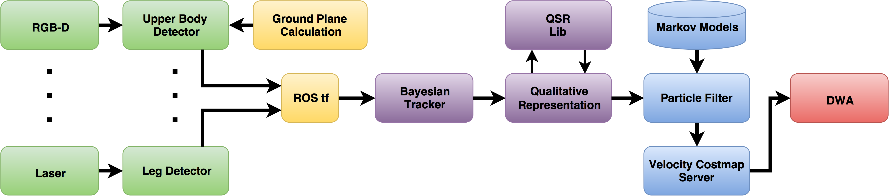
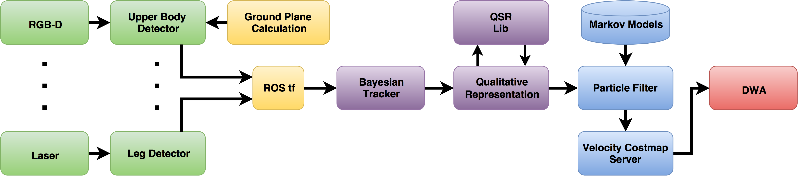

Qualitative Constraints for Human-aware Robot Navigation
{kind=link}
In this work, we propose the combination of a state-of-the-art sampling-based local planner with so-called Velocity Costmaps
and a particle filter for Qualitative Spatial Reltaions to achieve human-aware robot navigation. Instead of introducing humans
as ``special obstacles'' into the representation of the environment, we restrict the sample space of a ``Dynamic Window Approach''
local planner to only allow trajectories based on a qualitative description of the supposed interaction. Hence, we are ensuring
collision free trajectories by obeying prior knowledge of the unfolding of the encounter.
To achieve this, we use the well-established Qualitative Trajectory Calculus to model the mutual navigation intent of human
and robot, and translate these descriptors into sample space constraints for trajectory generation.

The whole pipeline has been fully implemented into the Robot Operating System (ROS) Indigo and Hydro. The video below shows how it works on a mobile robot.
Source Code
Particle Filter: github
Online QTC Generation: github
Online Classification: github
Velocity Costmap Server: github
Modified DWA: github
Debian Packages
Please follow the instructions on setting up the STRANDS repositories. Afterwards, install:

The whole pipeline has been fully implemented into the Robot Operating System (ROS) Indigo and Hydro. The video below shows how it works on a mobile robot.
Source Code
Particle Filter: github
Online QTC Generation: github
Online Classification: github
Velocity Costmap Server: github
Modified DWA: github
Debian Packages
Please follow the instructions on setting up the STRANDS repositories. Afterwards, install:
sudo apt-get install ros-indigo-hrsi-launchPeople Perception
{kind=link}
All currently used mobile robot platforms are able to navigate safely through their environment,
avoiding static and dynamic obstacles. However, in human populated environments mere obstacle
avoidance is not sufficient to make humans feel comfortable and safe around robots. To this end,
a large community is currently producing human-aware navigation approaches to create a more socially
acceptable robot behaviour. A major building block for all Human-Robot Spatial Interaction is the
ability of detecting and tracking humans in the vicinity of the robot. We present a fully
integrated people perception framework, designed to run in real-time on a mobile robot. This
framework employs detectors based on laser and RGB-D data and a tracking approach able to fuse
multiple detectors using different versions of data association and Kalman filtering. The resulting
trajectories are transformed into Qualitative Spatial Relations based on a Qualitative Trajectory
Calculus, to learn and classify different encounters using a Hidden Markov Model based representation.
The whole pipeline has been fully implemented into the Robot Operating System (ROS) Indigo and Hydro. The video below shows how it works on a mobile robot.
Installation via custom PPA
Please follow the instruction to set-up the STRANDS repository.
The perception pipeline can then be installed via:
Source Code
The sources can be found on our github webpage and are freely available under the MIT license.
Usage
Instructions on how to use the system can be found on the github page mentioned above. Especial the launch package provides instructions on how to start the complete system.
The whole pipeline has been fully implemented into the Robot Operating System (ROS) Indigo and Hydro. The video below shows how it works on a mobile robot.
Installation via custom PPA
Please follow the instruction to set-up the STRANDS repository.
The perception pipeline can then be installed via:
sudo apt-get install ros-$DISTRO-strands-perception-people
Source Code
The sources can be found on our github webpage and are freely available under the MIT license.
Usage
Instructions on how to use the system can be found on the github page mentioned above. Especial the launch package provides instructions on how to start the complete system.
Generation of Qualitative Spatial Relations for Human-Robot Spatial Interaction
{kind=link}
We propose a probabilistic model for Human-Robot Spatial Interaction (HRSI) using a Qualitative Trajectory
Calculus (QTC). Our model accounts for the invalidity of certain transitions within the QTC to reduce the
complexity of the probabilistic model and to ensure state sequences in accordance to this representational
framework.
We developed a python library with ROS compatibility to create Qualitative Spatial Relations which is available from our github page. the base library has been developed by Dr Yiannis Gatsoulis. The QTC definitions have been added by Christian Dondrup.
Installation via custom PPA
Please follow the instruction to set-up the STRANDS repository.
The library can then be installed via:
Source Code
The sources can be found on our github webpage and are freely available under the MIT license.
Usage
Instructions on how to use the system can be found on the github page mentioned above.
Online QTC state chain generation from tracker output
The only creation of QTC state chains and training and/or classification via HMMs is currently under development. The most current version can be found on my github fork.
We developed a python library with ROS compatibility to create Qualitative Spatial Relations which is available from our github page. the base library has been developed by Dr Yiannis Gatsoulis. The QTC definitions have been added by Christian Dondrup.
Installation via custom PPA
Please follow the instruction to set-up the STRANDS repository.
The library can then be installed via:
sudo apt-get install ros-$DISTRO-strands-qsr-lib
Source Code
The sources can be found on our github webpage and are freely available under the MIT license.
Usage
Instructions on how to use the system can be found on the github page mentioned above.
Online QTC state chain generation from tracker output
The only creation of QTC state chains and training and/or classification via HMMs is currently under development. The most current version can be found on my github fork.